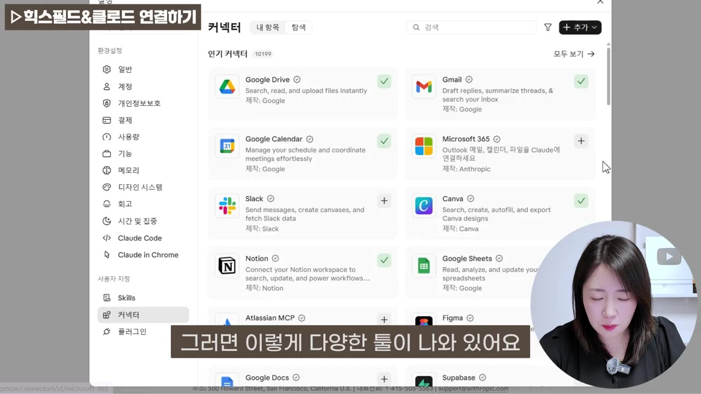
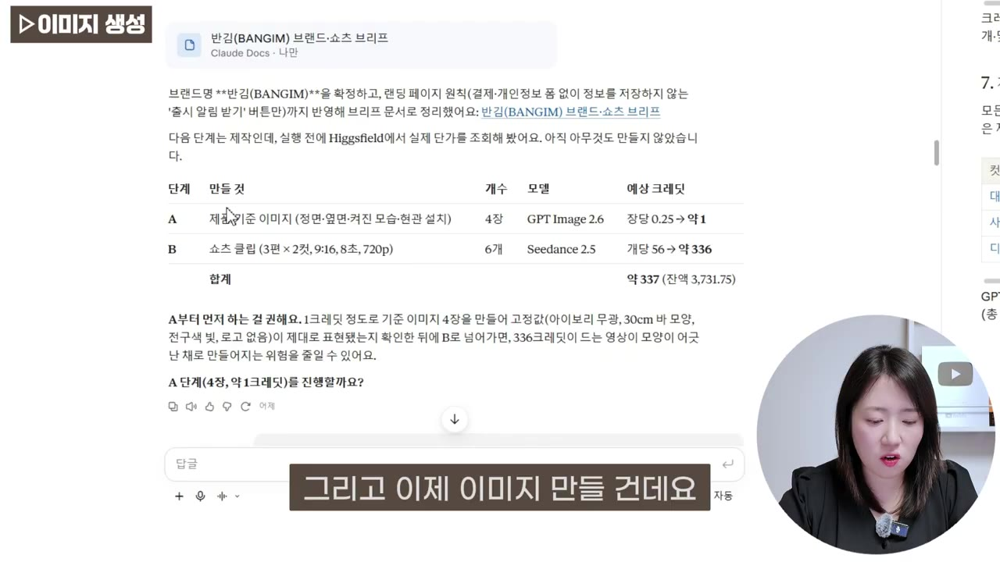
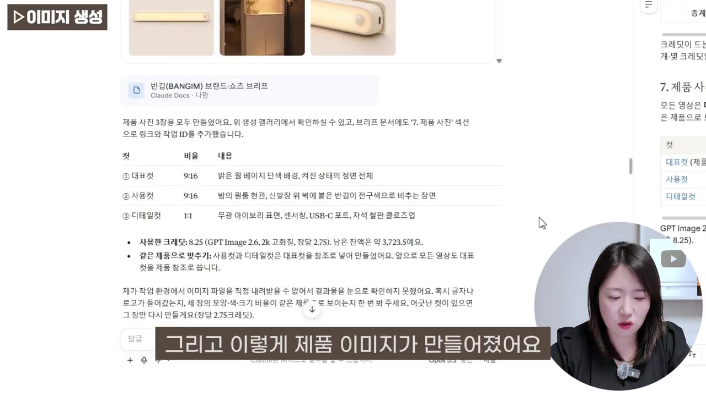
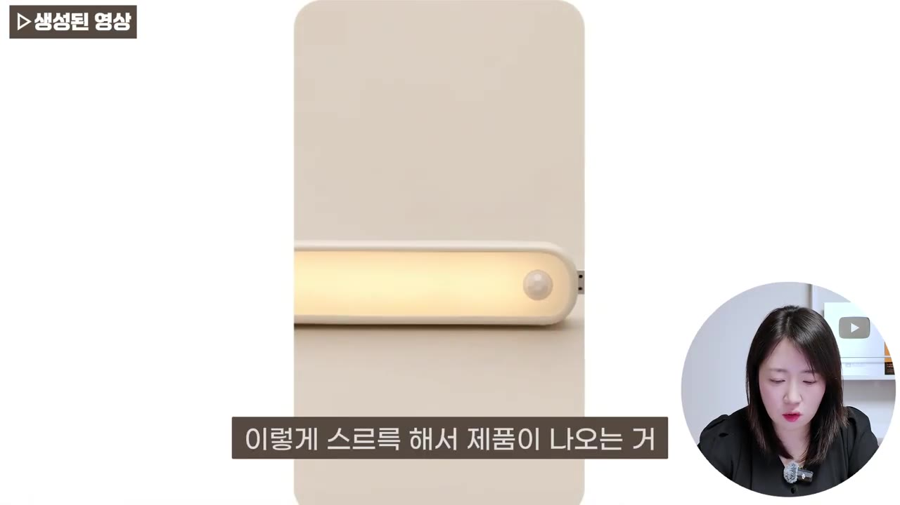
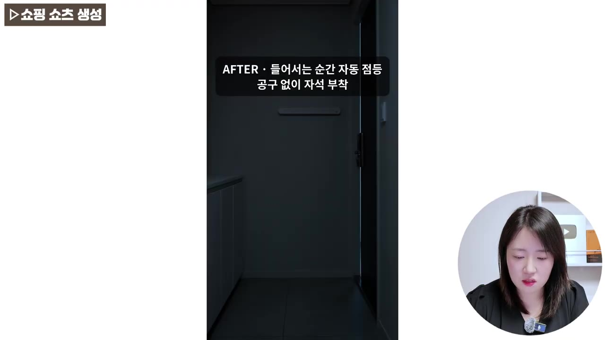
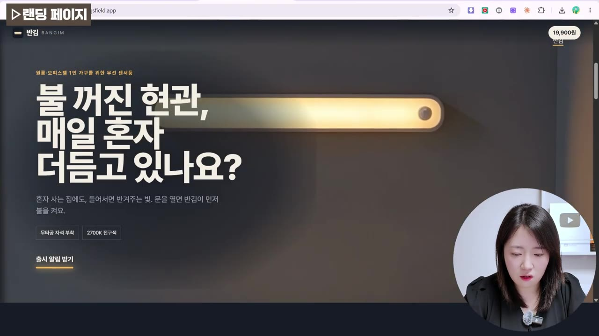
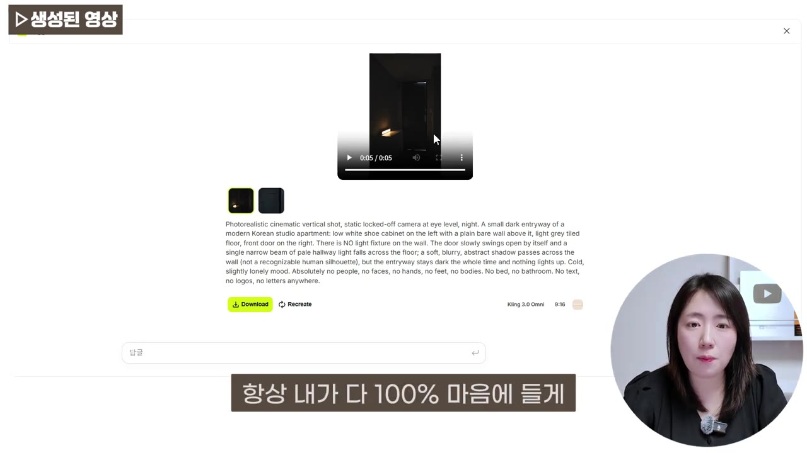

클로드가 내 쇼핑몰을 차리기 시작했다 | 힉스필드로 AI 쇼핑쇼츠 영상 만드는 방법! 상품기획부터 랜딩페이지까지 신제품 런칭 하는 방법!
▶ 원본 영상 보기한눈에 보기
- 클로드에 힉스필드 MCP(AI 도구를 채팅창에 연결하는 방식)를 연결하면, 대화창 하나에서 상품 기획·제품 사진·쇼츠 영상·랜딩 페이지까지 만들 수 있다.
- 예시로 1인 가구용 무선 모션 센서등 가상 브랜드 '반김'을 웹 리서치부터 시작해 처음부터 끝까지 만들었다.
- 제품 사진 3장, 쇼츠 3편, 랜딩 페이지에 총 79크레딧(약 4,900원)이 들었다.
- AI가 만든 영상이 100% 마음에 들지는 않는다. 어색한 컷은 다시 생성하거나 프롬프트 수정을 요청해 고친다.
이런 분께 도움이 됩니다
- 쇼핑 쇼츠나 온라인 판매를 시작하려는데 상품 선정, 제품 촬영, 영상 제작, 판매 페이지 제작이 막막한 분.
- 클로드와 힉스필드만으로 기획부터 배포까지 어디까지 되는지, 비용이 얼마인지 알고 싶은 분.
핵심 내용
전체 구조와 비용
- 클로드는 기획과 대화를, 힉스필드는 이미지·영상 생성과 편집·사이트 제작을 맡는다. 생성 비용은 힉스필드 크레딧에서 나가고, 기획과 대화는 클로드를 쓴다. (2:37)
- 힉스필드 MCP를 연결하면 두 사이트를 오가지 않고 클로드 안에서 모든 작업을 한다. 결과물은 힉스필드 계정에도 저장된다. (6:41)
- 작업은 기획 → 브랜드 확정 → 제품 사진 → 쇼츠 영상 → 편집 → 랜딩 페이지 순으로 진행했다.

| 작업 | 크레딧·비용 (설명란 기준) |
|---|---|
| 제품 사진 3장 | 약 510원 |
| 쇼츠 3편 | 약 2,810원 (45크레딧) |
| 랜딩 페이지 | 약 1,610원 |
| 합계 | 79크레딧, 약 4,900원 |
- 기준은 울트라 플랜 월 결제, 1달러 약 1,450원 환산이다. 쇼츠를 추가 제작하면 15크레딧이 더 든다. (14:15)
💡 수정 작업이 늘면 비용도 늘지만, 브랜드 하나의 기본 세트가 약 5천 원 수준이다.
상품 기획 (웹 리서치)
- 클로드에 "쇼핑 쇼츠 운영 마케팅 팀"이라는 역할을 주고, 2·30대 1인 가구용 생활용품 후보 5개와 쇼츠로 보여 주기 좋은 장면을 요청했다. 처음부터 영상화를 염두에 두고 상품을 고르는 것이 핵심이다. (3:11)
- 클로드가 웹 검색으로 1인 가구의 불편(습기·결로, 빨래 널 곳 부족 등)과 후보별 경쟁 강도를 정리했다. 근거 링크도 함께 나온다.
- 추천은 무선 모션 센서등이었다. 가격이 적당하고, 깜깜한 곳에서 불이 켜지는 전후 대비가 빨라 영상에 유리하다는 이유다.
- 이어서 브랜드명 후보, 핵심 메시지, 판매 가격, 제품 정의 고정값, 쇼츠 3편 기획을 한 번에 통으로 요청했다. 요즘은 끊어 요청하기보다 통으로 맡기는 경향이 있다. (4:38)
- 결과는 다음과 같다. (5:09)
- 브랜드명: 반김 ("문을 열면 불이 먼저 반겨 준다"는 뜻)
- 핵심 메시지: "혼자 사는 집에서도 들어서면 반겨 주는 빛"
- 랜딩 페이지 기획도 함께 나왔다.
- 클로드가 예상 크레딧도 먼저 알려 준다. 사용자는 브랜드명만 확정하고 "결제·개인정보 폼 없이 출시 알림 받기 버튼만 둔다"는 조건을 주고 나머지는 맡겼다.

제품 사진 만들기 (일관성 고정)
- 브리프에서 GPT 이미지 2.6 모델로 제품 사진을 만들기로 했다. 장당 약 1크레딧이다. 쇼츠는 9:16 비율이며, 비율은 지정하지 않아도 클로드가 알아서 맞춘다. (7:12)
- 결과는 대표컷(정면), 사용컷(일상), 디테일컷(확대) 3장이다. (7:42)
- 힉스필드 화면에서 다운로드, 같은 프롬프트로 다시 만들기(Recreate), 수정(Edit)을 할 수 있다.
- 영상 전에 제품 이미지(특히 확대·전신 이미지)를 먼저 고정하면 제품이나 모델의 일관성 유지에 크게 도움이 된다. (8:43)

쇼츠 클립 만들기
- 처음 계획은 8초짜리 6개였다. 사용자가 컷 구성을 바꾸고, 모델을 Kling 3.0으로, 길이를 5초로, 화질을 고화질로 바꿔 달라고 요청했다. 클로드는 먼저 전체 브리프를 갱신하고 확인한 뒤 생성했다. (8:43)
- 첫 컷을 확인한 뒤 "같은 설정으로 나머지 5개도 만들어 줘"라고 요청했다. 문이 열리며 제품이 설치된 모습, 박스에서 꺼내는 언박싱, USB-C 연결, 문이 열리며 불이 켜지는 장면 등이 나왔다. (9:43)
- 사람이 필요하면 "한국인 20대 여성이 혼자 집에 들어오는 장면"처럼 추가 요청하면 된다.
- 세 번째 컷은 어색하게 나왔다. 이럴 때는 다시 생성하거나 해당 영상의 프롬프트를 수정해 달라고 요청한다. (10:17)
- 모델은 Kling 3.0 외에 Seedance 2.5 같은 새 모델을 써 봐도 좋다고 한다.

💡 제품을 직접 놓고 촬영하지 않아도, 고정한 제품 이미지 몇 장으로 다양한 장면을 만들 수 있다.
쇼츠 편집
- 만든 클립을 쇼츠 3편으로 만들어 달라고 요청했다. 힉스필드의 영상 편집 기능이 편마다 클립을 이어 붙이고 자막과 엔드 카드를 넣는다. (11:13)
- 요청 내용은 "화면 아래쪽은 버튼에 가려지니 자막은 위쪽에, 쇼핑 쇼츠보다 브랜드 영상 느낌으로" 정도였다. 자세히 지시하지 않았는데 편집까지 되어서 놀랐다고 한다.
- 실제 판매용이라면 더 세부적인 수정 요청이 필요하다. (12:22)

랜딩 페이지 만들기
- 힉스필드의 웹사이트 빌더로 만든다. 힉스필드와 연동되지 않는 일반 웹사이트로 만들어 달라고 요청했다. (12:22)
- 결과물에는 다음이 포함됐다. (12:49)
- 헤드카피 "불 꺼진 현관, 매일 혼자 더듬고 있나요?"
- 마우스로 드래그하는 인터랙션
- 출시 예정가, 출시 알림 받기 버튼, 자주 묻는 질문
- 앞서 만든 제품 이미지와 영상
- 클로드 채팅의 "오픈 웹사이트(링크 열기)" 버튼으로 결과를 확인한다.

결과물 관리
- 힉스필드의 비디오 메뉴에서 만든 영상이 모두 보이고, 여기서 추가 작업·다운로드·편집·웹사이트 제작으로 이어갈 수 있다. (14:49)
따라 해보기
준비물
- 클로드 계정, 힉스필드 계정(둘 다 따로 필요)
- 힉스필드 크레딧. 영상에서는 울트라 플랜을 썼고, 요금·할인은 설명란 링크 참고.
- 힉스필드 링크: 영상 설명란의 가입 링크
단계별 방법
🔁 클로드×힉스필드 신제품 런칭 순서
- MCP 연결
- 연결 확인
- 상품 리서치
- 브랜드 확정
- 제품 사진 3장
- 쇼츠 클립
- 쇼츠 편집
- 랜딩 페이지
- 비용 정리
- 1MCP 연결
클로드 채팅창
+→ 커넥터 → 커넥터 둘러보기에서 "Higgsfield" 검색 → 클로드에 연결 → 힉스필드 로그인 (1:29) - 2연결 확인
"힉스필드 MCP로 내 크레딧 잔액과 요금제를 확인해 줘"라고 요청한다.
- 3상품 리서치
타깃(2·30대 1인 가구)과 생활용품 후보 5개, 쇼츠로 보여 주기 좋은 장면을 요청한다. 영상 속 요청문은 설명란에 있다.
- 4브랜드 확정
브랜드명 후보, 핵심 메시지, 가격, 제품 정의 고정값, 쇼츠 3편 기획을 통으로 요청한다. 확정할 것만 정하고 나머지는 위임한다.
- 5제품 사진 3장
예상 크레딧을 확인하고 "그대로 만들어 줘"라고 요청한다. 대표·사용·디테일 컷이 나온다.
- 6쇼츠 클립
모델(Kling 3.0)·길이(5초)·화질을 지정해 요청한다. 첫 컷을 확인한 뒤 나머지를 같은 설정으로 만든다.
- 어색한 컷은 다시 생성하거나 프롬프트 수정을 요청한다.

힉스필드에서 생성된 쇼츠 클립(0:05)과 프롬프트 확인 화면 · ▶ 10:36 - 7쇼츠 편집
힉스필드 편집 기능으로 편별로 이어 붙이고 자막과 엔드 카드를 넣어 달라고 요청한다.
- 8랜딩 페이지
웹사이트 빌더로 "힉스필드 연동 없는 일반 웹사이트"로 만들어 달라고 요청한다.
- 9비용 정리
클로드에 작업별 크레딧과 원화 비용을 정리해 달라고 요청한다.
따라 할 수 있는지 점검
- ✅ 바로 따라 할 수 있음: MCP 연결 경로(1~2단계), 요청 흐름과 순서, 클립 재생성 방법.
- ⚠️ 3~4단계 「리서치·브랜드」: 실제 요청문 원문이 영상에 소리로만 대략 나온다 → 설명란의 요청문을 복사해 내 상품에 맞게 바꿔 쓰기.
- ⚠️ 5~6단계 「이미지·영상」: 크레딧 단가가 모델·설정마다 다르다 → 요청 때 클로드에게 예상 크레딧을 먼저 물어보기(영상 7:12 화면 확인).
- ⚠️ 7단계 「편집」: 자막 문구, 엔드 카드 구성 등 실제 지시문이 영상에 나오지 않는다 → 영상 11:13 근처 화면 확인.
- ⚠️ 8단계 「랜딩 페이지」: 도메인 연결, 실제 판매 방법은 다루지 않는다. 출시 알림 버튼만 있는 시안 수준이다.
- ❓ 크레딧 합계는 영상 자막(이미지 크레딧 숫자가 불분명)과 설명란이 일부 달라, 이 노트는 설명란 수치를 썼다.
- ⚠️ 힉스필드는 유료 구독(영상은 울트라 플랜)이 필요하다. 무료 플랜으로 같은 결과가 나오는지는 영상에 없다.
확인 방법
- 클로드에서 크레딧·요금제 응답이 오면 연결 성공이다.
- 힉스필드 비디오 메뉴에 생성 결과가 쌓이고, 랜딩 페이지는 "링크 열기"로 열린다.
막히면
- 영상이 어색하게 나오면 다시 생성하거나 프롬프트를 수정해 달라고 요청한다.
- 제품 이미지를 먼저 고정하지 않으면 컷마다 제품 모양이 달라질 수 있다.
기억할 숫자·인용
- 제품 사진 약 510원 / 쇼츠 3편 약 2,810원 / 랜딩 페이지 약 1,610원 / 합계 79크레딧 ≈ 약 4,900원
- 브랜드 '반김': "문을 열면 불이 먼저 반겨 준다"
- 쇼츠 설정: Kling 3.0, 5초, 9:16
- ※ '반김'은 영상 제작을 위한 가상 브랜드이며 실제 판매 제품이 아니다.
생각해볼 점
- 비용은 테스트 기준이다. 수정과 재생성이 늘면 크레딧이 더 든다.
- 영상은 힉스필드 제휴 링크가 걸린 콘텐츠이므로 서비스 장점이 강조되었을 수 있다. 요금과 기능은 직접 확인하자.
- 웹 리서치 기반 상품 추천은 경쟁 강도와 수익성을 실제 판매 데이터로 다시 검증해야 한다.
바로 해볼 일
- 클로드에서 힉스필드 커넥터를 연결하고 크레딧을 확인해 본다.
- 내가 팔고 싶은 상품 1개로 설명란 요청문을 바꿔 기획 단계만 먼저 돌려 본다.
- 제품 사진 3장을 만든 뒤 쇼츠 클립 1개만 생성해 비용과 품질을 확인한다.